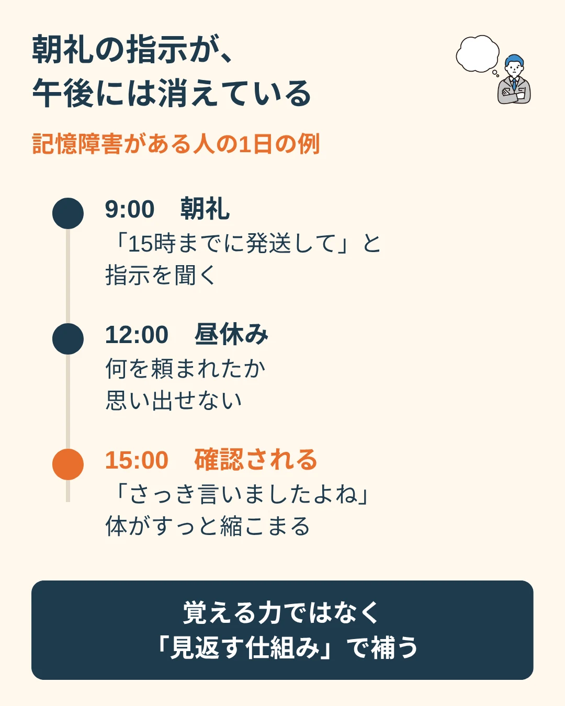
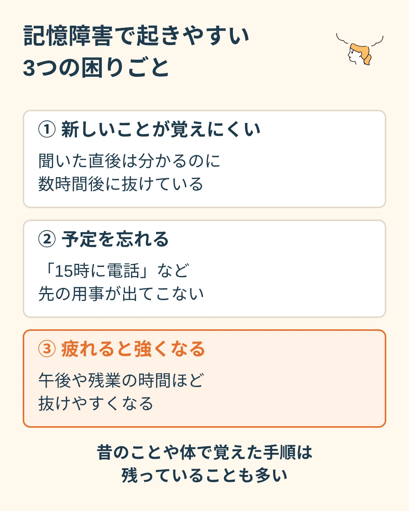
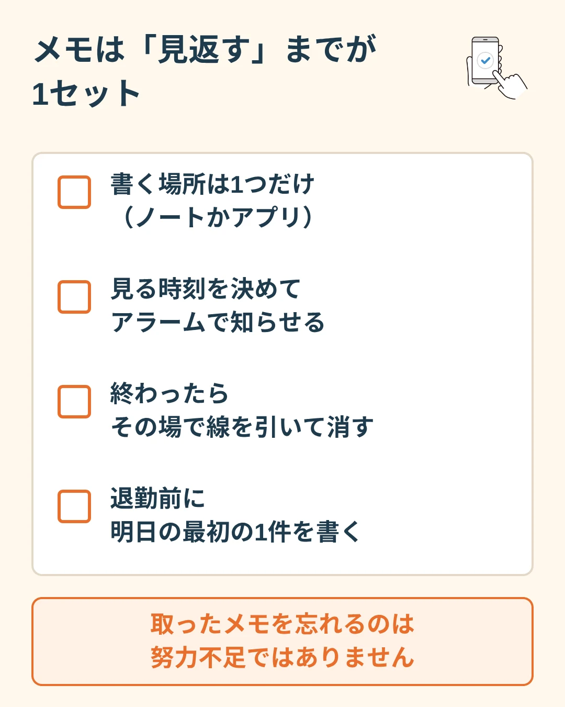
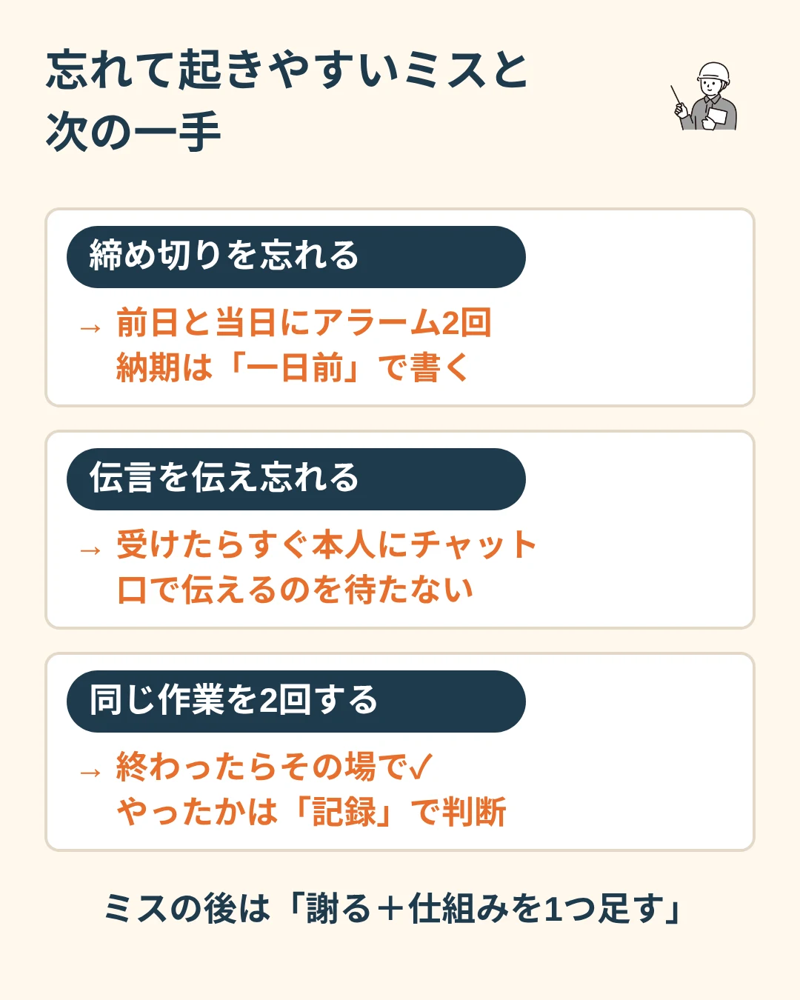
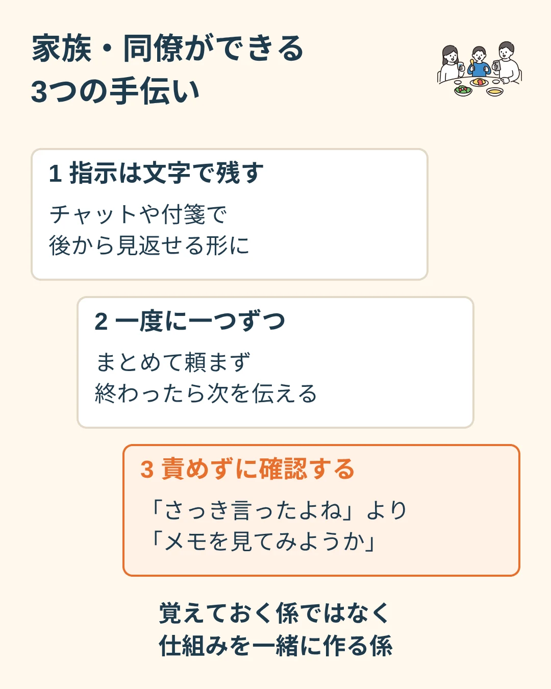

「さっき教わったのに、もう思い出せない」が繰り返される
就労支援の現場で、こんな声を聞いたことがあります。「朝礼で言われたことを、お昼にはもう思い出せないんです」。メモを取ること自体は習慣にしているのに、そのメモをどこに書いたか、メモを取ったこと自体を忘れてしまう。そんな経験を繰り返すうちに、「また同じことを聞いてしまった」という申し訳なさが、少しずつ積み重なっていきます。
よくあるのは、こんな1日です。9時の朝礼で「15時までにこの荷物を発送して」と頼まれる。その場では「はい」と答えて、内容も分かっています。ところが午前中に電話を2本受け、別の作業を頼まれているうちに、発送の件は頭から抜けてしまう。昼休みに「何か頼まれていた気がする」と思っても、中身が出てこない。15時に上司から「発送、終わった？」と聞かれて、初めて思い出します。

本人にとっては、さぼっているわけでも、話を聞いていなかったわけでもありません。聞いた瞬間は確かに分かっていたのに、それを後から引き出す道筋がうまくつながらない、という感覚に近いようです。周りから見えにくい特性なので、「やる気がない」「注意力が足りない」と誤解されやすい面もあります。
つらいのは、忘れることそのものより、そのあとに起きる流れです。何度か聞き返して気まずい思いをすると、次第に聞き返せなくなります。「たぶんこうだったはず」と推測で進めて、違っていたと分かって、また謝る。謝る回数が増えるほど、自分を責める気持ちも強くなります。この流れを止めるには、記憶力を鍛えるより、覚えていなくても困らない仕組みを先につくるほうが近道になることが多いです。
「事故から2年経つんですけど、体は元気なんです。歩けるし、力仕事も前と同じようにできます。でも、朝礼で言われたことを、お昼にはもう覚えてなくて。『さっき言いましたよね』って言われるのが一番きつくて、また今日もやっちゃった、って自己嫌悪の繰り返しでした。半年くらい前からメモ帳を1冊に決めて、指示は全部その場で書くようにしたら、聞き返す回数はだいぶ減りました。それでも、そのメモをどこに置いたか忘れて、机の上を探し回ることはまだあります。」
「倒れたのは大学を卒業したばかりの頃でした。くも膜下出血の手術は無事に済んで、見た目には全然わからないんですけど、頭の中がずっと霧がかかってる感じで。同じ説明を3回聞いても、その場ではわかった気になるのに、次の日にはもう真っ白になってるんです。前の接客の仕事では『やる気がない』って思われてるのが伝わってきて、結局1年で辞めました。今の事務の仕事は最初に事情を伝えてあって、指示はチャットで残してもらうようにお願いしてます。それだけで、だいぶ違いました。」
高次脳機能障害とは何か、記憶障害だけではない特性
高次脳機能障害は、交通事故や転倒などによる外傷性脳損傷、脳卒中（脳梗塞・脳出血・くも膜下出血）、脳炎、低酸素脳症などで脳が傷ついたあとに現れる、認知や行動面の困りごとの総称です。記憶障害のほか、気が散りやすい・ミスに気づきにくい注意障害、段取りや計画が立てにくい遂行機能障害、感情や行動のコントロールが難しくなる社会的行動障害、すぐに疲れてしまう易疲労性などが、いくつか組み合わさって現れることが多いとされています。
記憶障害で、仕事に出やすい3つの困りごと
記憶障害と一口に言っても、「何もかも忘れる」わけではありません。仕事の場面では、次の3つの形で出ることがよくあります。

1つ目は、新しく聞いたことが残りにくいことです。説明を受けたその場では理解できているのに、数時間後や翌日には抜けている。新しい職場や配置換えの直後に特にきつく感じやすいのは、覚えることが一度に増えるからです。
2つ目は、先の予定を思い出せないことです。「15時に取引先へ電話」「明日の朝イチで会議室の予約」といった、未来の決まった時刻にやることが、その時刻に頭に浮かんでこない。これは日常でも仕事でも影響が大きく、メモだけでは足りず、時刻で知らせてくれる道具が助けになる部分です。
3つ目は、疲れると抜けやすくなることです。午前中は問題なくこなせていたのに、午後や残業の時間になると急に抜けが増える。脳が疲れやすい特性（易疲労性）と記憶の困りごとは、セットで考えておくと対策が立てやすくなります。
一方で、事故や病気の前に身につけた知識や、何度も繰り返して体で覚えた作業の手順は、比較的残っていることも多いとされています。「前の仕事で慣れていた作業は普通にできるのに、新しいルールだけ覚えられない」という声がよく聞かれるのは、このためです。できることとできないことの差が大きいので、周りからは「できるのに、なぜ」と見えてしまいやすいのです。
職場でできる工夫、メモは「取る」よりも「見返す仕組み」
記憶障害のある方の多くは、すでにメモを取っています。それでも困っているのは、メモを取ることより、あとで見返すことのほうでつまずいているからです。工夫の中心は「書く」から「見返す仕組み」へ移すことにあります。

メモを1冊に決めて、見る時刻を決める
書く場所がノート、付箋、スマホ、手の甲とバラバラだと、後から探せません。使うノートかアプリを1つに決め、「席に戻ったら開く」「休憩明けに開く」「退勤前に開く」と、見るタイミングを行動とセットにするのが基本です。それでも見るのを忘れる日があるなら、スマホやパソコンのアラームを10時・13時・16時など決まった時刻に鳴らし、「メモを見る」とだけ表示させる方法があります。
- 指示を受けたら、その場でメモを取る（「メモしていいですか」と一言添える）
- メモは1冊のノート、または1つのアプリに一本化する
- 見る時刻を決め、アラームで知らせる
- 終わった項目はその場で線を引いて消す
- 退勤前に、明日いちばん最初にやる1件を書いておく
時刻のある用事は、メモではなくリマインダーに入れる
「15時に電話」のような先の予定は、メモに書いても15時にそのページを開かなければ意味がありません。時刻が決まっている用事は、聞いたその場でスマホのリマインダーや予定表に入れて、通知に思い出させてもらうほうが確実です。締め切りがある仕事は、当日だけでなく前日にも通知を設定しておくと、準備の時間を確保しやすくなります。
毎回の作業は、手順書とチェック表にしてしまう
毎日・毎週くり返す作業は、覚えようとせず、手順を1枚の紙やファイルに書き出しておきます。手順は番号つきで短く、1行に1動作。終わった行にチェックを入れていけば、「どこまでやったか」を記憶に頼らず確認できます。最初は上司や同僚に手順書を見てもらい、抜けがないか確かめてもらうと安心です。
聞いたら、その場で一度復唱する
指示を受けたら、「15時までに、A社あての荷物を発送、ですね」と短く復唱します。復唱は聞き間違いを防ぐだけでなく、相手にとっても「伝わった」と確認できる合図になります。口頭の説明が長いときは、「あとで見返したいので、要点だけチャットでもらえますか」とお願いしてみるのもひとつの方法です。録音を使いたい場合は、職場のルールを確認し、必ず相手の了解を得てからにしましょう。
疲れやすさ（易疲労性）も一緒に対策する
疲れると記憶の抜けが増えるので、休憩は「疲れたら取る」ではなく、あらかじめ時刻を決めて取るほうがうまくいきやすいです。たとえば50分作業したら10分休む、難しい作業や新しいことを覚える作業は午前中に寄せる、午後は慣れた作業を中心にする、といった組み立て方があります。疲れのサイン（同じ行を何度も読む、言葉が出にくくなる、イライラしやすくなる）を自分で知っておくと、休むタイミングをつかみやすくなります。
忘れて起きやすい仕事のミスと、次の一手
記憶障害があると、ミスの形にはある程度の傾向があります。よく起きる形と、そのあとに打てる手を知っておくと、「またやってしまった」で終わらせずに済みます。ここでは、就労支援の現場でよく相談される3つを取り上げます。

締め切りを忘れる
頼まれたときは覚えていても、数日先の締め切りは、その日が来ても思い出せないことがあります。対策は、締め切りを聞いたその場で予定表に入れ、前日と当日の2回、通知が鳴るようにしておくことです。さらに、自分の予定表には本当の締め切りより1日早い日付で書いておくと、思い出したときにまだ間に合う余裕が残ります。
伝言を伝え忘れる
電話や立ち話で「○○さんに伝えておいて」と頼まれるのは、記憶障害のある方にとって負担の大きい場面です。相手が席に戻るまでの間に、別の用事が入って抜けてしまいやすいからです。受けたらすぐ、本人あてにチャットやメールで送ってしまう、紙なら相手の机に付箋で貼る、というように「口で伝えるために覚えておく」時間をなくすのがコツです。電話の伝言は、相手の名前・用件・折り返し先の3つを書く欄のあるメモ用紙を電話の横に置いておくと、聞きながら埋められます。
同じ作業を2回する、やったか分からなくなる
「この書類、もう送ったっけ」と分からなくなって二重に送ってしまう、逆に送ったつもりで送っていない。これは記憶で確かめようとするほど起きやすくなります。終わったらその場でチェック表に印をつけ、「やったかどうか」は記憶ではなく記録で判断すると決めておくと、迷いが減ります。メールなら送信済みフォルダ、ファイルなら更新日時など、あとから確かめられる場所を決めておくのも助けになります。
ミスのあとは「謝る」と「仕組みを1つ足す」をセットに
ミスをしたとき、謝るだけで終わると、次も同じことが起きないかという不安が残ります。「申し訳ありません。次からは、締め切りを聞いたらその場で予定表に入れて、前日に通知が鳴るようにします」と、謝罪と一緒に、足す仕組みを1つだけ伝えると、相手も安心しやすく、自分も「次はこうすればいい」と気持ちを切り替えやすくなります。仕組みを一度に3つも4つも足すと続かないので、1回のミスにつき1つで十分です。
そして、推測で進めそうになったときは、「念のため確認させてください。○○は△△でよかったでしょうか」と一言聞くほうが、結果的に周りの手間も減ります。聞き返すことは迷惑をかけることではなく、ミスを防ぐための確認だと考えてみてください。
家族や同僚ができる手伝い方
記憶障害の工夫は、本人だけで完結させようとすると負担が大きくなります。家族や職場の人が少し関わり方を変えるだけで、本人が楽になる場面は多くあります。ここでは、周りの人に向けて、よく効く3つの手伝い方をまとめました。本人がこの記事を家族や上司に見せるときの材料にしてもらっても構いません。

職場の同僚・上司ができること
いちばん効果が大きいのは、指示を文字で残すことです。口頭で伝えたあとに、チャットで「15時までにA社へ発送、お願いします」と一行送るだけで、本人はあとから何度でも見返せます。次に、頼みごとは一度に一つずつ。3つまとめて頼むと、2つ目と3つ目が抜けやすくなります。1つ終わったら次を伝える、あるいは箇条書きにして渡すと負担が減ります。そして、忘れていたときは「さっき言ったよね」ではなく「チャットに書いたので、見てもらえますか」「メモを一緒に見てみようか」と、確認の言い方に変えてもらえると、本人は萎縮せずに済みます。
家族ができること
家では、夜に翌日の予定を一緒に確認する時間を5分つくるだけでも違います。カレンダーやスマホの予定表を見ながら「明日は10時に会議、帰りに病院」と声に出して確認し、必要なら通知を入れておく。朝は玄関に「持ち物と今日の最初の予定」を書いたボードを置く、という家庭もあります。また、仕事から帰ってきて言葉が出にくい、イライラしやすいといった様子は、疲れのサインかもしれません。そんな日は話し合いや頼みごとを翌日に回すなど、疲れている時間帯を避ける工夫も助けになります。
気をつけたいのは、家族が全部を覚えて代わりに管理してしまうことです。助かるように見えて、家族の負担が重くなり、本人も「自分でやれる部分」を手放してしまいます。家族の役割は、覚えておくことではなく、本人が使える仕組み（予定表・アラーム・ボード）を一緒に整えることだと考えると、長く続けやすくなります。
支える側も、相談先を持っておく
何度も同じことを伝えるのは、支える側にとっても疲れることです。イライラしてしまう自分を責める家族の方も少なくありません。各都道府県の高次脳機能障害の支援拠点機関では、家族からの相談も受け付けているところが多く、地域によっては当事者や家族の会もあります。家族関係の悩みについては障害のことで家族と関係が難しいときの記事も参考にしてください。
職場への伝え方と、使える制度・相談先
症状の全てを話す必要はない
職場に伝えるとき、症状をすべて説明する必要はありません。伝わりやすいのは、「困る場面」「自分がしている工夫」「お願いしたいこと」の3点をセットにする形です。たとえば、こんな伝え方があります。
「疲れてくると抜けが増えるので、50分ごとに5〜10分の休憩を挟ませてほしい」「新しい作業は、手順を紙にまとめる時間をいただきたい」なども、業務に結びついた具体的なお願いです。最初から全員に話す必要はなく、信頼できる上司一人や、産業医、人事担当者から少しずつ共有していくところから始めても大丈夫です。雇用の場面では、障害者雇用促進法により、事業主に合理的配慮の提供が求められています。お願いの仕方は合理的配慮の頼み方の記事で詳しく紹介しています。
障害者手帳という選択肢
高次脳機能障害は、精神障害者保健福祉手帳の対象になるとされています。申請は、高次脳機能障害について初めて医師の診察を受けた日から6か月以上たってからが目安です。また、失語症や手足のまひなど身体の障害がある場合は、身体障害者手帳の対象になることもあります。どちらに当たるか、等級はどうなるかは、主治医や市区町村の障害福祉窓口に確認するのが確実です（2026年11月時点の情報です）。手帳を取ると、障害者雇用枠での就職や、配慮を前提にした働き方を選びやすくなる場合があります。取るかどうか迷うときは障害者手帳を取るべきか悩んだときの記事も参考にしてください。
相談できる窓口
- リハビリテーション科、高次脳機能障害を診ている専門外来
- 都道府県の高次脳機能障害支援拠点機関（本人・家族の相談、支援機関の紹介）
- 市区町村の障害福祉窓口（手帳や福祉サービスの手続き）
- 地域障害者職業センター（職業評価、職場に入って支えるジョブコーチ支援）
- 就労移行支援事業所（記憶の工夫を含めた就職準備と、就職後の定着支援）
- 障害者就業・生活支援センター（仕事と生活の両面の相談）
- 産業医、EAP（従業員支援プログラム）を導入している職場ならその窓口
どこに相談すればいいか分からないときは、まず支援拠点機関か市区町村の窓口に「高次脳機能障害で、仕事のことを相談したい」と伝えれば、合った窓口につないでもらえることが多いです。働く準備から一緒に考えてほしい場合は、就労移行支援の記事や職業リハビリテーションの記事で、使える支援の全体像を確認できます。
よくある質問
関連記事
この記事に、聞いてみたいことはありますか？
「自分の場合はどうなんだろう」と思ったことを、気軽に書いてみてください。いただいた質問は個別にお返事したうえで、匿名で記事にすることがあります。